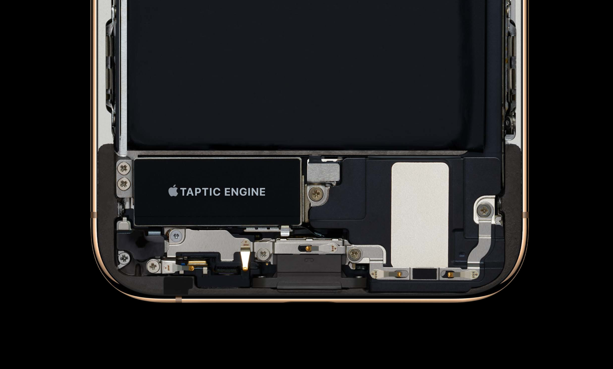
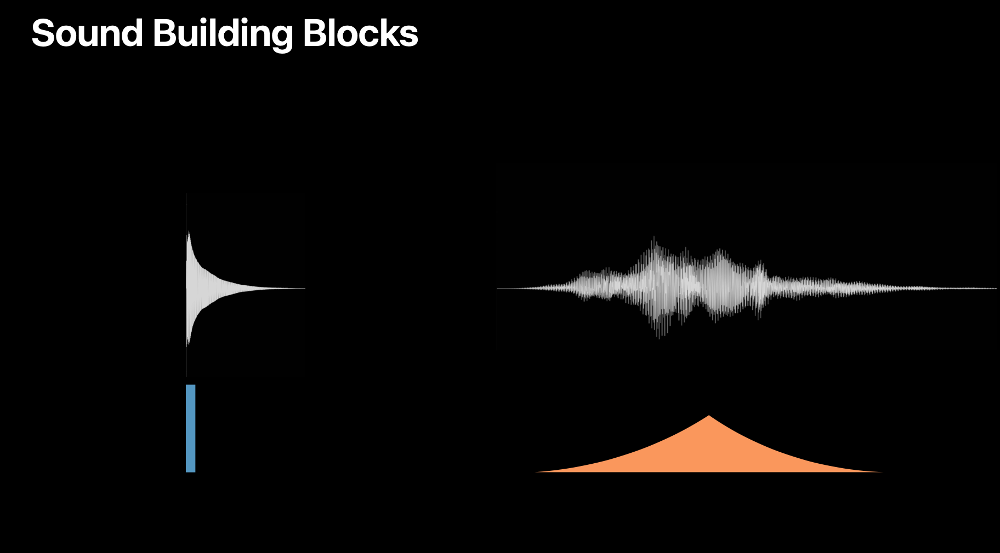

触感（Haptics）吸引人们的触觉以增强与屏幕上界面交互的体验。例如，当一个 Apple Pay 交易确认时，在视觉和声音反馈之外，系统还会有一个触感反馈。触感也可以增强触摸手势和交互，如滚动一个picker/选择器或者打开一个 switch/开关。
目录
- 目录
- iOS 上的触感
- 设计 iOS 上的触感
- 在 iOS 13 中创建自定义的触感模式
- watchOS 上的触感
- 设计 watchOS 上的触感
- 什么是声音触感体验？
- 设计指导原则
- 实践建议
- 参考链接
iOS 上的触感
在支持此功能的 iPhone 设备上，你可以通过几种方式在 app 中增加触感：
- 使用那些由 Apple 设计的默认系统触感的标准的 UI 元素，如 switch 开关、滑条 slider、选择器 picker；
- 当讲得通的时候，使用一个反馈发生器（feedback generator）弹奏通知（notification）、影响（impact）、选择（selection）分类里的预置触感模式中的一个。
- 在需要更多控制的场景中，创作并弹奏你自己的触感模式。
当你使用系统触感时，iOS 会管理反馈的力度和行为。例如，一个开关会发出一个微弱的敲击，一个通知分类里的「success」反馈发生器会像下图一样发出触感，点击这里聆听用声音模拟的效果。
系统反馈发生器内置了下面几种触感模式：
-
Notification 通知
- Success（成功）：表明一个任务或者一个动作（例如打对勾或者锁定汽车）完成。
- Warning（警告）：表明一个任务或者一个动作（例如打对勾或者锁定汽车）发出了一个警告。
- Failure（失败）：表明一个任务或者一个动作（例如打对勾或者锁定汽车）失败。
-
Impact 影响
- Light（轻）：提供一个物理替代以补充视觉体验。例如，当一个界面划进来并到位或者两个对象发生碰撞时，人们可能会有砰的一下那种感觉。
- Medium（中）：提供一个物理替代以补充视觉体验，比上面的更重一些。例如，当一个界面划进来并到位或者两个对象发生碰撞时，人们可能会有砰的一下那种感觉。
- Heavy（重）：提供一个物理替代以补充视觉体验，比上面的再重一些。例如，当一个界面划进来并到位或者两个对象发生碰撞时，人们可能会有砰的一下那种感觉。
- Rigid（僵硬）：提供一个物理替代以补充视觉体验，比上面的清脆一些。例如，当一个界面划进来并到位或者两个对象发生碰撞时，人们可能会有砰的一下那种感觉。
- Soft（柔软）：提供一个物理替代以补充视觉体验，比上面的沉重一些。例如，当一个界面划进来并到位或者两个对象发生碰撞时，人们可能会有砰的一下那种感觉。
-
Selection 选择
- Selection（选择）：表明被选中对象发生了变化。例如，当滚动一个选择器 picker 的滚轮时，用户会感到轻轻的点击。这种反馈是为了通过一连串分离的值表现移动，不是做出或者确认一个选择。
无论你是否使用系统提供的触感还是自己创建，使用触感增强用户体验而不是让用户从他们的目标中分散注意力是十分重要的。
设计 iOS 上的触感
设计吸引人们触觉的界面可以把他们在物理世界熟悉的感觉带到 app 中。无论你怎样在你的 app 中产生触感，下面这些设计规范都可以帮助你给用户一个统一的和扣人心弦的体验。
- 在每个触感和触发器之间构建一种清晰的、有因果的关系：理想情况下，人们总是知道为什么你的 app 要产生一种触感模式。如果触感不能增强一个因果关系，那将是令人困惑的，看上去没有必要。
- 在你的 app 中使用触感补充其他的反馈效果：当你的 app 的视觉、听觉、触觉反馈就像物理世界那样和谐的时候，用户体验就会更加连贯一致，一切才很自然。
- 审慎地使用触感：例如，在提供持久价值时使用触感，如果为了增强新奇感而使用触感会让人们觉得你的 app 在耍花招。只在一小部分重要的、反映结果的交互上使用触感，在很多微不足道的交互上产生触感会淹没用户。
- 使用触感要保持一致性：触感反馈中的一致性可以帮助人们在某个触感模式和某个体验间形成触觉关联。例如，当一个游戏角色没能完成任何时，如果你的 app 产生了一种特定的触感模式，人们就会把那种触感模式与消极的结果关联在一起。如果你在一个积极的结果中（如完成一个关卡）使用了那种触感模式，人们会感到困惑。
- 避免过度使用触感：有时当触感偶尔被触发时，这种体验会刚刚好，但是当经常发生时，体验就会令人厌倦。通常情况下，避免设计那种产生太长或者重复的触感反馈的体验。最好的触感体验是开启时不会意识到，但是关闭后会想念的那种。
- 确保好好测试 app 中的触感：不同的人有不同的偏好设置、不同的对触感的灵敏级别感知，所以你需要在尽可能多的人身上测试触感效果。
- 让触感是可选的：如果用户需要的话可以让他们关闭触感，关闭后，确保人们仍然可以正常使用、享受 app。
- 在游戏中，考虑一种使用自定义触感增强玩家体验的方式：除了当玩家与某个控件发生交互时产生触感，你可能想要通过产生触感传达游戏内的事件。例如，触感可以增强真实体验，像是碰撞或者敲击，也可以产生微妙的体验，像是脚步的临近或者逼近的危险。
- 要意识到产生触感可能会影响其他的用户体验：通过设计，触感会对人们产生产生足够的物理力度，让他们感觉到设备的震动。确保触感不会扰乱相机、陀螺仪、麦克风等的用户体验。
在 iOS 13 中创建自定义的触感模式
自定义触感模式可以表现像是射出弹弓、在崎岖的小路上行驶这种事情。自定义模式可以基于用户的输入和情景动态变化。例如，当一个游戏角色从树中跳出来时玩家会感觉比角色跳入一个地方更强烈。
在 iOS 13 和之后的版本中，Core Haptics 提供了两种基本的建设模式用来生成自定义触感模式：
- 像是感到轻敲、脉冲这种短暂紧凑体验的短暂事件，例如在主屏幕上点击闪光灯按钮时的体验；
- 会感到不断震动的持续性事件，例如信息中的激光效果。
无论你选择哪种模式去产生自定义触感，你都需要控制它的锐度（sharpness）和它的强度（intensity）。
你可以把锐度当作是将触感体验抽象成能产生相符物理感觉的波形的一种方式。特定的锐度可以让你把体验的意图传达给系统。例如，你可能使用锐度值去传达一种柔软、圆滑、有机的体验，或者是一种松脆、清晰、机器驱动的体验。而强度如字面意思表示触感的力度。
通过对短暂事件和持续性事件的组合，变化锐度和强度，加入可选的听觉内容，你可以创建非常多的不同的触感体验。
watchOS 上的触感
在 Apple Watch 上，由 Taptic Engine 产生的每一个触感都会搭配一段声音，这两者在一起工作可以用连贯一致的方法传达相同的信息。
Apple Watch 根据一些特定的目的定义了一些触感，每一个触感类型都传达了特定的含义，而且只应该被传达那个含义：
- Notification（通知）：告诉用户有一些重要的事情或者是不普通的事情发生了，需要引起用户的注意。当一个本机或者远程通知到达时，这个触感就会由系统发出。
- Up（增加）：告诉用户有一个重要的值增加到了一个重要的门槛之上。
- Down（减少）：告诉用户有一个重要的值减少到了 一个重要的门槛之下。
- Success（成功）：告诉用户一个动作成功完成。
- Failure（失败）：告诉用户一个动作失败了。
- Retry（重试）：告诉用户一个动作失败了但可能需要重试。
- Start（开始）：告诉用户一个活动开始了。当开启一个计时器或者任何其他有准确起点和终点的活动时使用这个触感。这个触感之后一般都会有一个相对应的停止触感。
- Stop（停止）：告诉用户一个活动结束了。当停止一个计时器或者其他已经开始的活动时使用这个触感。
- Click（点击）：提供一种拨号盘点击或者有预置增量/间隔的进程的感觉。较少地使用这个触感。过度使用点击触感会削弱它的实用性，而当点击相互覆盖时会让人困惑。
设计 watchOS 上的触感
Apple Watch 上的触感不应该被 app 频繁使用，系统会阻止两个触感同时产生。
- 使用触感时要克制：只在为了引起对那些重要事件的注意力时使用触感。过度使用触感反馈会造成困惑或者削弱那个反馈的用处。
- 只为了它本来的目的使用每一个触感：每一个触感和声音都是根据状态目标而设计的。如果因为不同的目的使用了那个触感会让用户对表达的意思感到困惑。
- 提供视觉提示以匹配触感：更新你的界面的视觉样式或者内容以强化触发触感所表达的含义。同时提供视觉和触感反馈可以在用户的动作和结果间创造更深的连接。
- 在合适的时间产生触感：通常情况下，播放触感会有一段等待期。因此，最好是在执行相关任务时的第一步而不是最后一步产生触感。如果你在任务的最后一步产生触感，触感就会来得太晚，在触感和任务之间形成一种没关联的感觉。
什么是声音触感体验？
当声音的频率很低很低时，你的耳朵就无法听到，但当你把手放在扬声器上时，你还能感觉到。因此我们设计了 Taptic Engine 用来播放那些只有你自己能感受到的低频声音。在 iPhone 中，Tapic Engine 旁边就是扬声器模块。Tapic Engine 产生的触感会与扬声器发出的声音同步，得到的结果，我们就称之为声音触感体验。

因为触感意味着需要被感知，但因为这是一篇文章，所以你需要通过视觉化的触感和一些模拟的声音来想象出下面会提到的触感体验。
iOS 13 介绍的可以自定义触感体验的 Core Haptics 可以让开发者在 iPhone 上完全自由使用 Taptic Engine。你可以通过它产生自定义的震动，像下图所示的波形这样。
我们也可以创建更短更紧凑的触感，像下图这样，只有一个循环，这种我们称之为短暂事件（transient），它更加瞬时性，感觉就像一个瞬时的撞击、敲击、点击。
我们可以进一步精炼它，可以使用基本的形状来表示不同模式的触感。所以这个短暂事件就可以变成一个简单的矩形，我们可以使用 Taptic Engine 通过不同的方式调整触感体验。
首先可以调整强度或者说振幅，可以让它更加圆滑、柔软。另一个角度，可以让它更加精确、松脆。这些都可以通过 Taptic Engine 来实现。
总结下，我们可以调整强度，也可以调整另一个设计维度-锐度，从而控制两种类型的事件，一种是持续性的，一种是短暂性的。
设计指导原则
对于设计绝佳的声音触感体验，有三个设计指导原则：
- 因果性
- 和谐
- 实用
这些概念或者方法被贯彻使用在 Apple 产品的工作中，它们也可以帮助提升你的 app 体验。下面具体来看。
因果性 Causality
第一个是因果性，因果性是有有关于声音触感必须有用，造成它的体验必须是明显的。想象一个足球运动员踢球，在原因—脚踢球和结果-撞击的声音和感觉之间就有一个明显或者清晰的关系。
这个体验听上去和感受如何取决于交互对象的品质（鞋子的材料、足球的材料）、动作的范围（用力踢还是轻轻踢）以及环境（露天体育场或者足球场）。

因为我们太熟悉这个事情了，所以如果声音有一点不同，就会讲不通。所以当设计你的 app 的声音体验时，如果你的交互对象是一个物理对象，仔细考虑下它会是是什么感觉、听上去怎样。举个例子，设计 Apple Pay 确认时的声音-触感体验。我们希望声音和触感能够完美匹配屏幕上的动画，那个对勾。首先考虑下，你会把什么声音与付钱关联在一起，钱是什么声音，使用 Apple Pay 付钱的交互是什么？屏幕上的确认付款成功的动画是积极的。
我们从众多声音中进行了挑选，不能太轻浮、太刺耳、不严肃，要表明一个清晰的确认的感觉，最终选择了你们现在听到的那个声音。声音确定之后就是确定触感。首先想到的是模仿声音的波形，因为可以完美匹配。
但仔细体验之后，其实两个简单的点击更好。这就像两个乐器一样，一个你可以听到，一个你可以感知到，两个乐器没有必要总是弹奏相同的东西，但至少节奏是相同的。
和谐 Harmony
第二个是和谐，和谐是有关于事物通过视觉、通过声音应该感觉到的方式。在真实世界中，声音、触感、视觉是自然和谐的，因为它们有清晰的因果关系。在数字世界，我们需要手动地实现这个工作，输入和输出需要由开发者进行特别的设计。
来试着创建一个简单的模型，这里有一个小球从空中掉落并与屏幕底部发生碰撞。先来添加声音反馈，找一个与物理冲撞相匹配的声音，它需要短、精确、清晰，还需要基于撞击的速率调整声音的振幅。接下来添加添加触感，想象一下球撞到你手里的感觉，与小球撞击屏幕底部保持同步，所以我们可以选择一个高锐度的短暂事件，同时需要根据速率调整强度。最后，非常重要的是，让视觉、听觉、触觉达到同步。之后，魔法就发生了，就像是一个真的球与墙壁发生了碰撞。但当我们不让三者同步，感觉就完全不对了。所以「和谐」需要你仔细考虑、多加注意，当完成时就可以创造完美的令人愉悦的体验。
再来看 Apple Watch 数码表冠的声音触感设计在和谐上的应用。Apple Watch 上第一次出现 Taptic Engine，实现了声音和触感的精准同步。在 S4 上，触感和一个微弱的声音被添加到了表冠的旋转中，你会在手指上感受到那个尖锐、精确的触感。对于声音，我们从世界上传统手表制造商中寻找灵感，从真实世界的机器对象中寻找灵感。最后你听到了现在的那个在手腕上安静的声音。声音和触感的完美结合打造了一种机械表冠的错觉。为了匹配这种机械感觉，动画也做了调整以匹配声音和触感。
实用 Utility
第三个是实用，实用是只在你对 app 体验可以提供清晰的价值和好处时才添加声音触感反馈。要使用克制，不要因为你可以而添加声音触感。
来看一个使用了 ARKit 的 app 实例。在这个 app 中，我们在环境中放置了一个虚拟的计时器，交互会取决于和虚拟计时器的距离，通过声音触感体验以完善 AR 交互，增强用户体验中最重要的备份。靠近计时器、远离计时器会调整声音触感体验。
针对不同的元素或者 app 中的小交互克制地添加声音触感反馈，有时候只有触感没有声音也是一个好主意。寻找 app 中可能需要声音触感反馈的地方，聚焦于可以增强用户体验或者传达什么重要事情的元素，尽量保持简单。
但如果你添加的太多，这很有可能淹没用户，削弱真正重要事情的价值。
实践建议
先回顾下 Core Haptics 提供的两个建设组件，一个是短暂事件，它是敏捷的、紧凑的触感体验，像是一个点击、一个敲击。另一个是持续的触感体验，可以维持很长时间。你可以指定持续时间。
对于短暂事件，有两个设计维度你可以控制：强度和锐度，可以使用较低的锐度值创建更圆滑、柔软的体验，使用较高的锐度值创建更精确、机械化、松脆的体验。而强度改变了体验的振幅。
对于持续性事件，也有这两个设计维度，可以创建随着时间更有机的、隆隆作响的体验，或者是使用更高的锐度创建更精确、更机械化的体验。
设计声音时，记住什么样的可以与这些触感完美工作。对于一个尖锐的短暂事件，一个尖锐的鸣响可能可以完美匹配。但如果你有一个声音更顺畅，使用相同的触感与之匹配就不是好主意，一个持续性的上上下下的触感可能更合适。但这些都不是绝对的，有很多空间去探索试验。

有时你可能会发现你思考的相反一面会工作的更好，例如 Apple Watch 闹钟的例子，当声音与触感同步时是不错，但当将触感反过来，并调整时间轴，先来一段向上走的触感，然后立即切断并开始播放声音，这样形成了清晰的先有动作后有反应，声音作为触感的应答。
通过一系列的相对立的事件去传达不同类型的体验也很普遍。下面这个例子里有四个短暂事件，但人们感受后会发现通常不会感觉到第一个触感，四下点击变成了三下点击，出现了影子效果。这是一个问题也是一个机会，我们可以利用这个影响。
来看 Apple Watch 上第三方通知的声音触感实例。这是一个非常重要的通知，我们希望用户能够清晰的感知到。这就可以利用影子效果去唤醒皮肤并准备好感知接下来要发生的。在正常通知的触感前增加一个短暂的触感。
我们也可以在相似的体验之间创建完全相反的功能。在 Apple Watch 上导航向左转是下图这样，是一连串的双重敲击。
如果是导航向右转，则是下图这样，声音有点相似，但不完全相同。此时如果还是按照波形设计触感的话，那触感就没有了区别。在这个例子中，我们可以增加触感，加倍双重敲击为四重敲击。
信息中的烟花发送效果也是一个非常好的将视觉动画、声音、触感完美和谐地结合在一起的好例子，你可以去实际感受下。
除了上面的这些指导原则，还有一些思考。最好的结果会在亲手听到、看到、感受到时产生。如果你是一名动画师，要与声音或者交互设计师紧密合作，反之亦然。那是创造统一体验的最好方式。想象你第一次使用你的 app，你会想听到什么、感受到什么？然后想象你使用了 100 多次，那些声音触感体验还能帮助你听到或感受到那些东西吗？或者是已经被淹没了。尽管体验它，去掉那些不引人注目或者没用的东西。不要害怕试验，尽管尝试。
参考链接
- Haptics - User Interaction - iOS - Human Interface Guidelines - Apple Developer
- Designing Audio-Haptic Experiences - WWDC 2019 - Videos - Apple Developer
- Introducing Core Haptics - WWDC 2019 - Videos - Apple Developer
- Haptic Feedback - User Interaction - watchOS - Human Interface Guidelines - Apple Developer
如果你觉得这篇文章对你有所帮助，欢迎请我喝杯咖啡，感谢你的支持😁